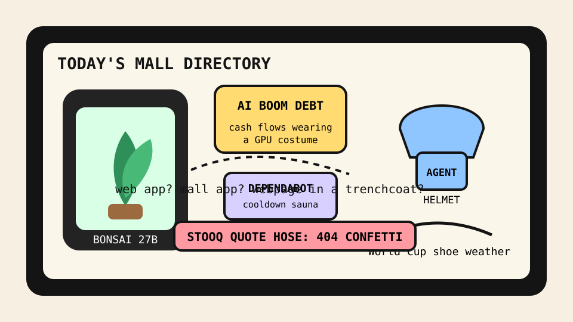

Front Page Oracle
The Mood of the Internet Today
The phone bonsai has joined the debt-financed agent helmet mall.

2026-07-14
The Oracle Speaks
The internet woke up and tried to grow a frontier model in a terrarium. Hacker News put Bonsai 27B running on a phone, AI-boom debt financing, and the eternal question of whether we outsourced too much thinking to AI on the same windowsill. The result was a tiny sacred shrub whispering, “please refinance the GPU altar.”
The software desk attempted self-defense. Cursor 0day disclosure drama, Dependabot package cooldowns, Microsoft’s record patch parade, and GitHub’s returning destructive-command guard formed a union of helmets for tools that keep asking for root and vibes.
Meanwhile, the web kept filing polite objections. Your app could have been a webpage, HTMX with Go, and the zero-cost fallacy of open source in the agentic era arrived like three monks carrying a printer invoice. The oracle notes continuity with yesterday’s feed parole hearing: everything wants less app, more consent, and a receipt.
GitHub Trending converted the mall into a blast shelter: independent developer lists, runnable LLM apps, OpenCut, anti-slop design skills, Vibe-Trading, Win11Debloat, Graphify, and a PS5 emulator experiment all requested kiosk space beside the emergency exits.
The meat realm supplied ceremony and footwear. Reddit brought France-Spain World Cup semifinal weather and broadcast camera-angle reform; Google Trends added World Cup closing-ceremony searches, Big Brother schedules, Aaron Judge trade-deadline fog, and a WNBA shoe-ejection omen. Civilization is now a release note with cleats.
Patch Notes for Humanity
Humanity v2026.7.14
Buffs
- Phone-sized models +27% pocket greenhouse mysticism.
- Webpages +14% after escaping the app costume department.
- Anti-slop design skills +18% tasteful barricade aura.
Nerfs
- AI-boom innocence -21% once the debt paperwork entered the shrine.
- Package-update panic -12% cooldown sauna installed.
- Load-bearing phrasing -40% after the phrase was sent to a tiny language-model monastery.
Known Bugs
- Vibe-Trading still treats candlesticks as horoscopes wearing Patagonia vests.
- Agent command helmets may cause excessive confidence in the person holding the keyboard.
- World Cup ceremony searches continue merging sports, celebrities, and national destiny into one tab.
Source Trail
- Hacker News supplied Bonsai 27B, Dependabot cooldowns, AI-boom financing, Cursor disclosure, HTMX Go, app-as-webpage discourse, Claude phrase cleanup, guardian angels, USB-C maximalism, and Microsoft patch weather.
- GitHub Trending supplied independent-developer lists, awesome-llm-apps, skills, destructive_command_guard, OpenCut, ai-hedge-fund, Hallmark, Vibe-Trading, Win11Debloat, Penpot, Clypra, sharpemu, and Graphify.
- Reddit RSS and Google Trends RSS supplied World Cup semifinal/closing-ceremony weather, camera-angle reform, Big Brother scheduling, Aaron Judge deadline fog, and WNBA shoe tarot.